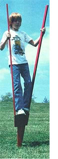
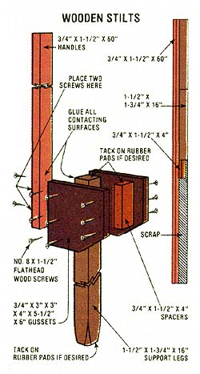

With some scrap lumber and an hour or so of your time, you can help your youngster...
There's little doubt that a child can have a heck of a lot of fun with the modest tin can walkers described in the centerfold of this issue. However, those who might want a somewhat fancier set of "member extenders" will be pleased to know that MOTHER-reader Tom Rath, Jr. of Lucedale, Mississippi sent in a sketch for a pair of walking sticks that're not only easy to build but because of their design are head and shoulders above any other stilts we've seen!
Tom's high-steppers are special, you see, because the "passenger" on these play poles rests his or her weight directly above the center support of each staff . . . rather than placing the load on the usual offset footrests, in a position which tends to force both of the shafts inward and make movement more of a problem than a pleasure.
Happily, it doesn't take much more than a supply of scrap wood to construct these artificial legs, either. You'll need just two 60" lengths of 1 X 2, two 16" pieces of 2 X 2, two 1 X 2 spacers (each about 4" long), four 5-1/2" pieces of 1 X 6, about 36 No. 8 X 1112" flathead wood screws, and a small amount of carpenter's glue. (Note: With the exception of the 1 X 6 gussets, all the wooden components for this project can be trimmed from a five-foot length of 2 X 4, it desired.)
After you've cut the handles, gussets, spacers, and support legs to the dimensions shown in the illustration, you can temporarily assemble each stilt and drill holes for the fasteners. The simplest way to accomplish this is to position one handle, leg, and spacer assembly on a flat surface . . . so that the upward-facing edges of the components are all flush with each other, and the sides of the handle and leg overlap. Next, place one gusset on top of this timber trio (make sure all the pieces are positioned according to the drawing), and drill holes, where indicated, through both the gusset and the wooden pieces on beneath it. (Hint: Your task will be simplifled if you use a No. 8 size combination drill and countersink tool.)
|
 STAFF PHOTO |
 |
|